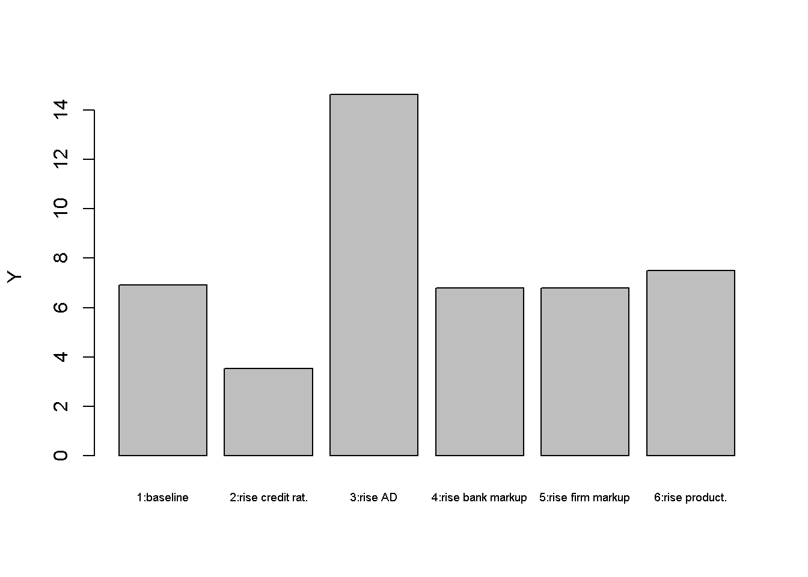
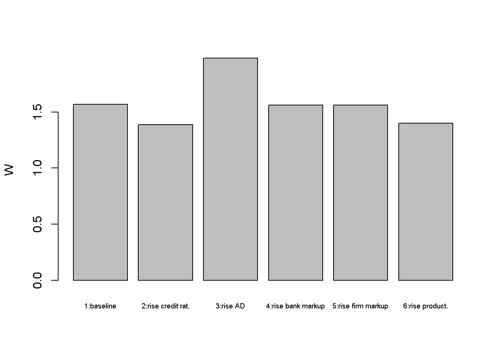
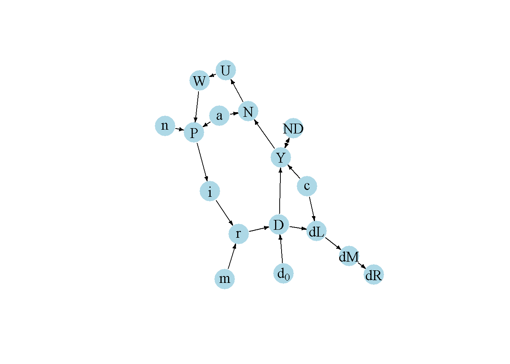

#Clear the environment
rm(list=ls(all=TRUE))
# Set number of scenarios (including baseline)
S=6
#Create vector in which equilibrium solutions from different parameterisations will be stored
Y_star=vector(length=S) # income/output
D_star=vector(length=S) # (notional) credit-financed aggregate demand
ND_star=vector(length=S) # income-financed aggregate demand
r_star=vector(length=S) # lending rate
N_star=vector(length=S) # employment
U_star=vector(length=S) # unemployment
P_star=vector(length=S) # price level
w_star=vector(length=S) # real wage
W_star=vector(length=S) # nominal wage
i_star=vector(length=S) # central bank rate
dL_star=vector(length=S) # change in loans
dM_star=vector(length=S) # change in bank deposits
dR_star=vector(length=S) # change in bank reserves
# Set exogenous variables that will be shifted
c=vector(length=S) # share of credit demand that is accommodated
d0=vector(length=S)# autonomous component of debt-financed aggregate demand
m=vector(length=S) # mark-up on lending rate
n=vector(length=S) # mark-up on prices
a=vector(length=S) # productivity
# Baseline parameterisation
c[]=0.8
d0[]=5
m[]=0.15
n[]=0.15
a[]=0.8
## Construct scenarios
# scenario 2: increase in credit rationing
c[2]=0.4
# scenario 3: increase in autonomous demand
d0[3]=10
# scenario 4: increase in interest rate mark-up
m[4]=0.3
# scenario 5: increase in price mark-up
n[5]=0.3
# scenario 6: increase in productivity
a[6]=0.4
#Set constant parameter values
b=0.5 # propensity to spend out of income
d1=0.8 # sensitivity of demand with respect to the interest rate
i0=0.01 # discretionary component of central bank rate
i1=0.5 # sensitivity of central bank rate with respect to price level
Nf=12 # full employment/labour force
h=0.8 # sensitivity of nominal wage with respect to unemployment
k=0.3 # desired reserve ratio
W0=2 # exogenous component of nominal wage
# Initialise endogenous variables at some arbitrary positive value
Y = D = ND = r = N = U = P = w = W = i = dL = dR = dM = 1
#Solve this system numerically through 1000 iterations based on the initialisation
for (j in 1:S){
for (iterations in 1:1000){
#Model equations
# (1) Goods market
Y = ND + c[j]*D
# (2) Not-debt financed component of aggregate demand
ND = b*Y
# (3) Debt-financed component of aggregate demand
D= d0[j] - d1*r
# (4) Policy rate
i = i0 + i1*P
# (5) Lending rate
r = (1+m[j])*i
# (6) Change in loans
dL = c[j]*D
# (7) Change in deposits
dM = dL
# (8) Change in reserves
dR = k*dM
# (9) Price level
P = (1+n[j])*a[j]*W
# (10) Nominal wage
W = W0 - h*(U)
# (11) Real wage
w = 1/((1+n[j])*a[j])
# (12) Employment
N = a[j]*Y
# (13) Unemployment rate
U = (Nf - N)/Nf
}
#Save results for different parameterisations in vector
Y_star[j]=Y
D_star[j]=D
ND_star[j]=ND
r_star[j]=r
N_star[j]=N
U_star[j]=U
P_star[j]=P
w_star[j]=w
W_star[j]=W
i_star[j]=i
dL_star[j]=dL
dM_star[j]=dM
dR_star[j]=dR
}6 A Post-Keynesian Macro Model with Endogenous Money
Overview
Post-Keynesian Economics is an economic paradigm that was developed in the 1930s and 1940s by Joan Robinson, Nicholas Kaldor and others.1 The early post-Keynesian economists sought to develop further key ideas of John Maynard Keynes. They were critical of the Neoclassical Synthesis that introduced neoclassical elements into the Keynesian framework. Among many other points, post-Keynesians argued that money is created by commercial banks. Money creation is determined by the demand for credit rather than being under the control of the central bank, and should thus be considered endogenous. Post-Keynesians further assigned a key role to financial factors in the determination of economic activity, but also considered finance as a source of instability. They abandoned the neoclassical approach of deriving labour demand and supply from optimising behaviour and instead assumed oligopolistic market structures. Firms set prices by charging a mark-up on costs and workers set nominal wages based on their bargaining power.
Fontana and Setterfield (2009) present a simple model that could be regarded as a post-Keynesian alternative to the Neoclassical Synthesis. The model highlights the endogenous money creation process. Money is being created when commercial banks make loans to accommodate the demand for credit by creditworthy borrowers. The demand for credit is driven by aggregate demand. The interest rate on loans is determined by the base rate, set by the central bank, on which commercial banks charge a mark-up. Although credit creation is demand-driven, some borrowers will be credit constrained. In times of financial crises, banks tighten credit constraints, which can depress economic activity.
In this short-run model, prices are flexible but the capital stock is fixed. The focus is thus on goods market equilibrium rather than economic growth. As all endogenous variables adjust instantaneously, the model is static. We consider a version of the model due to Fontana and Setterfield (2009) with linear functions.
The Model
\[ Y=ND+cD \tag{6.1}\]
\[ ND=bY, \quad b \in (0,1) \tag{6.2}\]
\[ D= d_0 - d_1r, \quad d_1 > 0 \tag{6.3}\]
\[ i=i_0 + i_1P, \quad i_1 > 0 \tag{6.4}\]
\[ r=(1+m)i, \quad m > 0 \tag{6.5}\]
\[ dL=cD \tag{6.6}\]
\[ dM=dL \tag{6.7}\]
\[ dR=kdM, \quad k \in (0,1) \tag{6.8}\]
\[ P=(1+n)aW, \quad a,n > 0 \tag{6.9}\]
\[ W=W_0 - hU, \quad h > 0 \tag{6.10}\]
\[ w=\frac{1}{(1+n)a} \tag{6.11}\]
\[ N=aY \tag{6.12}\]
\[ U=1-\frac{N}{N^f} \tag{6.13}\]
where \(Y\), \(ND\), \(D\), \(r\), \(i\), \(P\), \(dL\), \(dM\), \(dR\), \(W\), \(w\), \(N\), \(U\), and \(N^f\) are output, the not debt-financed component of aggregate demand, the desired debt-financed component of aggregate demand, the lending rate, the policy rate, the price level, the change in loans, the change in money (bank deposits), the change in bank reserves, the nominal wage, the real wage, employment, the unemployment rate, and full employment (or total labour supply), respectively.
Equation 6.1 is the goods market equilibrium condition. Aggregate supply (\(Y\)) accommodates to the level of aggregate demand which is the sum of a not debt-financed component (\(ND\)) and a (desired) debt-financed component (\(D\)). The coefficient \(c\) is the proportion of loan applications that are deemed creditworthy and thus captures credit rationing by banks. By Equation 6.2, the not debt-financed component of aggregate demand is a function of current income. In Equation 6.3, the debt-financed component of aggregate demand has an autonomous component (\(d_0\))2 and is otherwise negatively related to the lending rate \(r\). Equation 6.4 specifies the monetary policy rule, where it is assumed that the central bank raises the policy rate \(i\) when the price level increases.^[This specification is somewhat unrealistic given that most modern central banks target a positive rate of inflation. However, it allows for an AS-AD representation of the model, which facilitates the comparison with the Neoclassical Synthesis model (Chapter 5) The lending rate in Equation 6.5 is given by a mark-up \(m\) that banks charge on the policy rate (which is the rate at which they can borrow reserves). The change in loans in Equation 6.6 is equal to the creditworthy demand for loans (\(cD\)). This captures the demand-driven nature of credit creation. The changes in loans translates one-to-one into a change in money, which are bank deposits in this model (Equation 6.7). This reflects the endogenous money creation process where commercial banks create new deposits when they make new loans. By Equation 6.8, banks obtain new reserves from the central bank to maintain a constant reserve-to-deposit ratio \(k\). Thus, the causality in this model runs from debt-financed demand to loans, to deposits, and finally to reserves.
By Equation 6.9, the price level is set by firms based on a mark-up (\(n\)) on unit labour cost (which are the product of the nominal wage \(W\) and the labour coefficient \(a\)). Nominal wages are set by workers based on their bargaining power, which is declining in the unemployment rate (Equation 6.13). The real wage in Equation 6.11 is derived from the pricing Equation 6.9, i.e. through their price setting power, firms ultimately determine the real wage. The level of employment in Equation 6.12 is determined residually based on economic activity and a constant-coefficient production function \((Y=\frac{N}{a})\). Finally, the level of employment in conjunction with an exogenously given labour force \(N^f\) (or total available labour time) can be used to obtain an unemployment rate in Equation 6.13.
Simulation
Parameterisation
Table 1 reports the parameterisation used in the simulation. Besides a baseline (labelled as scenario 1), five further scenarios will be considered. Scenario 2 is a rise in credit rationing in the form of a fall in \(c\). In scenario 3, autonomous credit-financed demand (\(d_0\)) increases. Scenarios 4 and 5 consider a rise in the interest rate (or bank) mark-up (\(m\)) and in the price (or firm) mark-up (\(n\)), respectively. Scenario 6 considers a rise in productivity reflected in a fall of the labour coefficient \(a\).
Table 1: Parameterisation
| Scenario | \(b\) | \(c\) | \(d_0\) | \(d_1\) | \(i_0\) | \(i1\) | \(m\) | \(k\) | \(n\) | \(W_0\) | \(h\) | \(a\) | \(N^f\) |
|---|---|---|---|---|---|---|---|---|---|---|---|---|---|
| 1: baseline | 0.5 | 0.8 | 5 | 0.8 | 0.01 | 0.5 | 0.15 | 0.3 | 0.15 | 2 | 0.8 | 0.8 | 12 |
| 2: rise in credit rationing (\(c\)) | 0.5 | 0.4 | 5 | 0.8 | 0.01 | 0.5 | 0.15 | 0.3 | 0.15 | 2 | 0.8 | 0.8 | 12 |
| 3: rise in autonomous demand (\(d_0\)) | 0.5 | 0.8 | 10 | 0.8 | 0.01 | 0.5 | 0.15 | 0.3 | 0.15 | 2 | 0.8 | 0.8 | 12 |
| 4: rise in bank mark-up (\(m\)) | 0.5 | 0.8 | 5 | 0.8 | 0.01 | 0.5 | 0.3 | 0.3 | 0.15 | 2 | 0.8 | 0.8 | 12 |
| 5: rise in firm mark-up (\(n\)) | 0.5 | 0.8 | 5 | 0.8 | 0.01 | 0.5 | 0.15 | 0.3 | 0.3 | 2 | 0.8 | 0.8 | 12 |
| 6: rise in productivity (\(a\)) | 0.5 | 0.8 | 5 | 0.8 | 0.01 | 0.5 | 0.15 | 0.3 | 0.15 | 2 | 0.8 | 0.4 | 12 |
Simulation code
Python code
# Load NumPy library
import numpy as np
# Set the number of scenarios (including baseline)
S = 6
# Create arrays to store equilibrium solutions
Y_star = np.zeros(S) # income/output
D_star = np.zeros(S) # (notional) credit-financed aggregate demand
ND_star = np.zeros(S) # income-financed aggregate demand
r_star = np.zeros(S) # lending rate
N_star = np.zeros(S) # employment
U_star = np.zeros(S) # unemployment
P_star = np.zeros(S) # price level
w_star = np.zeros(S) # real wage
W_star = np.zeros(S) # nominal wage
i_star = np.zeros(S) # central bank rate
dL_star = np.zeros(S) # change in loans
dM_star = np.zeros(S) # change in bank deposits
dR_star = np.zeros(S) # change in bank reserves
# Set exogenous variables that will be shifted
c = np.zeros(S) # share of credit demand that is accommodated
d0 = np.zeros(S) # autonomous component of debt-financed aggregate demand
m = np.zeros(S) # mark-up on lending rate
n = np.zeros(S) # mark-up on prices
a = np.zeros(S) # productivity
# Baseline parameterisation
c[:] = 0.8
d0[:] = 5
m[:] = 0.15
n[:] = 0.15
a[:] = 0.8
# Construct scenarios
# Scenario 2: increase in credit rationing
c[1] = 0.4
# Scenario 3: increase in autonomous demand
d0[2] = 10
# Scenario 4: increase in interest rate mark-up
m[3] = 0.3
# Scenario 5: increase in price mark-up
n[4] = 0.3
# Scenario 6: increase in productivity
a[5] = 0.4
# Set constant parameter values
b = 0.5 # propensity to spend out of income
d1 = 0.8 # sensitivity of demand with respect to the interest rate
i0 = 0.01 # discretionary component of central bank rate
i1 = 0.5 # sensitivity of central bank rate with respect to the price level
Nf = 12 # full employment/labour force
h = 0.8 # sensitivity of nominal wage with respect to unemployment
k = 0.3 # desired reserve ratio
W0 = 2 # exogenous component of nominal wage
# Initialize endogenous variables at some arbitrary positive value
Y = D = ND = r = N = U = P = w = W = i = dL = dR = dM = 1
# Iterate through the system
for j in range(S):
for iteration in range(1000):
# Model equations
Y = ND + c[j] * D
ND = b * Y
D = d0[j] - d1 * r
i = i0 + i1 * P
r = (1 + m[j]) * i
dL = c[j] * D
dM = dL
dR = k * dM
P = (1 + n[j]) * a[j] * W
W = W0 - h * U
w = 1 / ((1 + n[j]) * a[j])
N = a[j] * Y
U = (Nf - N) / Nf
# Save results for different parameterizations in the vectors
Y_star[j] = Y
D_star[j] = D
ND_star[j] = ND
r_star[j] = r
N_star[j] = N
U_star[j] = U
P_star[j] = P
w_star[j] = w
W_star[j] = W
i_star[j] = i
dL_star[j] = dL
dM_star[j] = dM
dR_star[j] = dRPlots
Figures Figure 6.1 - Figure 6.7 depict the response of the models key endogenous variables to various shifts.
barplot(Y_star, ylab="Y", names.arg=c("1:baseline", "2:rise credit rat.", "3:rise AD",
"4:rise bank markup","5:rise firm markup", "6:rise product."), cex.names = 0.6)

An increase in credit rationing (scenario 2) reduces deposit money creation as well as actual (as opposed to desired) aggregate demand. This drags down output and employment. The rise in unemployment reduces workers nominal wage demands and thus the price level. The lending rate falls as the central bank reduces the policy rate.
barplot(P_star, ylab="P", names.arg=c("1:baseline", "2:rise credit rat.", "3:rise AD",
"4:rise bank markup","5:rise firm markup", "6:rise product."), cex.names = 0.6)
An increase in (debt-financed) autonomous demand (scenario 3) has expansionary effects on output and employment. The money stock accommodates through increased loan creation. The increase in workers bargaining power leads to higher nominal wages and prices. The central bank reacts by raising the policy rate but this does not completely offset the expansionary effect.
barplot(r_star, ylab="r", names.arg=c("1:baseline", "2:rise credit rat.", "3:rise AD",
"4:rise bank markup","5:rise firm markup", "6:rise product."), cex.names = 0.6)
barplot(dM_star, ylab="dM", names.arg=c("1:baseline", "2:rise credit rat.", "3:rise AD",
"4:rise bank markup","5:rise firm markup", "6:rise product."), cex.names = 0.6)
In scenarios 4 and 5, the interest rate (or bank) mark-up and the price (or firm) mark-up increase, respectively. The increase in the bank mark-up raises the lending rate, which has a contractionary effect. The increase in the firm mark-up raises the price level, which has a contractionary effect through the monetary policy response. Notably, the rise in the price mark-up reduces the real wage.
barplot(U_star*100, ylab="U (%)", names.arg=c("1:baseline", "2:rise credit rat.", "3:rise AD",
"4:rise bank markup","5:rise firm markup", "6:rise product."), cex.names = 0.6)
barplot(W_star, ylab="W", names.arg=c("1:baseline", "2:rise credit rat.", "3:rise AD",
"4:rise bank markup","5:rise firm markup", "6:rise product."), cex.names = 0.6)

Finally, an increase in productivity (scenario 6) reduces the price level, which induces a lower policy rate, leading to a small expansionary effect. However, it increases the unemployment rate as fewer workers are needed to produce the same level of output. This reduces the nominal wage, but raises the real wage.
barplot(w_star, ylab="w", names.arg=c("1:baseline", "2:rise credit rat.", "3:rise AD",
"4:rise bank markup","5:rise firm markup", "6:rise product."), cex.names = 0.6)
Python code
# Plot results (here for output only)
import matplotlib.pyplot as plt
scenario_names = ["1:baseline", "2:rise credit rat.", "3:rise AD", "4:rise bank markup", "5:rise firm markup", "6:rise product"]
# Create a bar plot
plt.bar(scenario_names, Y_star)
plt.ylabel("Y")
plt.xticks(rotation=45, ha="right") # Rotate x-axis labels for better readability
plt.tight_layout() # Ensure the labels fit within the plot area
# Show the plot
plt.show()Directed graph
Another perspective on the models properties is provided by its directed graph. A directed graph consists of a set of nodes that represent the variables of the model. Nodes are connected by directed edges. An edge directed from a node \(x_1\) to node \(x_2\) indicates a causal impact of \(x_1\) on \(x_2\).
## Create directed graph
# Construct auxiliary Jacobian matrix for 18 variables:
# r, Y, ND, D, i, P, W, w, N, U, dl, dM, dR, d0, c, m, a, n
M_mat=matrix(c(0,0,0,0,1,0,0,0,0,0,0,0,0,0,0,1,0,0,
0,0,1,1,0,0,0,0,0,0,0,0,0,0,1,0,0,0,
0,1,0,0,0,0,0,0,0,0,0,0,0,0,0,0,0,0,
1,0,0,0,0,0,0,0,0,0,0,0,0,1,0,0,0,0,
0,0,0,0,0,1,0,0,0,0,0,0,0,0,0,0,0,0,
0,0,0,0,0,0,1,0,0,0,0,0,0,0,0,0,1,1,
0,0,0,0,0,0,0,0,0,1,0,0,0,0,0,0,0,0,
0,0,0,0,0,0,0,0,0,0,0,0,0,0,0,0,1,1,
0,1,0,0,0,0,0,0,0,0,0,0,0,0,0,0,1,0,
0,0,0,0,0,0,0,0,1,0,0,0,0,0,0,0,0,0,
0,0,0,1,0,0,0,0,0,0,0,0,0,0,1,0,0,0,
0,0,0,0,0,0,0,0,0,0,1,0,0,0,0,0,0,0,
0,0,0,0,0,0,0,0,0,0,0,1,0,0,0,0,0,0,
0,0,0,0,0,0,0,0,0,0,0,0,0,0,0,0,0,0,
0,0,0,0,0,0,0,0,0,0,0,0,0,0,0,0,0,0,
0,0,0,0,0,0,0,0,0,0,0,0,0,0,0,0,0,0,
0,0,0,0,0,0,0,0,0,0,0,0,0,0,0,0,0,0,
0,0,0,0,0,0,0,0,0,0,0,0,0,0,0,0,0,0), 18, 18, byrow=TRUE)
# Create adjacency matrix from transpose of auxiliary Jacobian
A_mat=t(M_mat)
# Create directed graph from adjacency matrix
library(igraph)
dg= graph_from_adjacency_matrix(A_mat, mode="directed", weighted= NULL)
# Define node labels
V(dg)$name=c("r", "Y", "ND", "D", "i", "P", "W", "w", "N", "U", "dL", "dM", "dR", expression(d[0]), "c", "m", "a", "n")
# Plot directed graph
plot(dg, main="", vertex.size=20, vertex.color="lightblue",
vertex.label.color="black", edge.arrow.size=0.3, edge.width=1.1, edge.size=1.2,
edge.arrow.width=1.2, edge.color="black", vertex.label.cex=1.2,
vertex.frame.color="NA", margin=-0.08)

Python code
#Load relevant libraries
import networkx as nx
import matplotlib.pyplot as plt
import numpy as np
# Construct auxiliary Jacobian matrix for 18 variables
# r Y ND D i P W w N U dL dM dR d0 c m a n
M_mat = np.array([[0,0,0,0,1,0,0,0,0,0,0,0,0,0,0,1,0,0],
[0,0,1,1,0,0,0,0,0,0,0,0,0,0,1,0,0,0],
[0,1,0,0,0,0,0,0,0,0,0,0,0,0,0,0,0,0],
[1,0,0,0,0,0,0,0,0,0,0,0,0,1,0,0,0,0],
[0,0,0,0,0,1,0,0,0,0,0,0,0,0,0,0,0,0],
[0,0,0,0,0,0,1,0,0,0,0,0,0,0,0,0,1,1],
[0,0,0,0,0,0,0,0,0,1,0,0,0,0,0,0,0,0],
[0,0,0,0,0,0,0,0,0,0,0,0,0,0,0,0,1,1],
[0,1,0,0,0,0,0,0,0,0,0,0,0,0,0,0,1,0],
[0,0,0,0,0,0,0,0,1,0,0,0,0,0,0,0,0,0],
[0,0,0,1,0,0,0,0,0,0,0,0,0,0,1,0,0,0],
[0,0,0,0,0,0,0,0,0,0,1,0,0,0,0,0,0,0],
[0,0,0,0,0,0,0,0,0,0,0,1,0,0,0,0,0,0],
[0,0,0,0,0,0,0,0,0,0,0,0,0,0,0,0,0,0],
[0,0,0,0,0,0,0,0,0,0,0,0,0,0,0,0,0,0],
[0,0,0,0,0,0,0,0,0,0,0,0,0,0,0,0,0,0],
[0,0,0,0,0,0,0,0,0,0,0,0,0,0,0,0,0,0],
[0,0,0,0,0,0,0,0,0,0,0,0,0,0,0,0,0,0]])
# Create adjacency matrix from transpose of auxiliary Jacobian and add column names
A_mat = M_mat.transpose()
# Create the graph from the adjacency matrix
G = nx.DiGraph(A_mat)
# Define node labels
nodelabs = {0: "r", 1: "Y", 2: "ND", 3: "D", 4: "i", 5:"P", 6: "W", 7: "w",
8: "N", 9: "U", 10: "dL", 11: "dM", 12: "dR", 13: "d0", 14: "c",
15: "m", 16: "a", 17: "n"}
# Plot the directed graph
pos = nx.spring_layout(G, seed=42)
nx.draw(G, pos, with_labels=True, labels=nodelabs, node_size=300, node_color='lightblue',
font_size=10)
edge_labels = {(u, v): '' for u, v in G.edges}
nx.draw_networkx_edge_labels(G, pos, edge_labels=edge_labels, font_color='black')
plt.axis('off')
plt.show()In Figure Figure 6.8, it can be seen that credit rationing (\(c\)), productivity (\(a\)), the price mark-up (\(n\)), the interest rate mark-up (\(m\)), and autonomous demand (\(d_0\)), are the key exogenous variables of the model. All other variables are endogenous, and many of them form a closed loop (or cycle) within the system. The lower-right part of the graph captures the goods market: debt- and not debt-financed aggregate demand determine output. The outer right part depicts the endogenous money creation process: creditworthy debt-financed demand determines credit creation, which translates into deposit money creation. Bank reserves are a residual. The lower-left part of the graph represents the labour market. The goods market feeds into the labour market via employment, which determines nominal wages and the price level. The real wage is a residual. The price level feeds into interest rate determination in the upper part of the model, which establishes a causal feedback link from the labour market to the goods market.
Analytical discussion
Like the Neoclassical Synthesis model, the post-Keynesian macro model can be represented as an AS-AD model. First, we will derive an IS and an interest-rate (IR) curve in the \((Y, r)\)-space, the latter representing monetary policy and bank lending instead of the money market (the conventional LM curve). Then we obtain the AS-AD representation of the model in the \((Y,P)\)-space. Finally, we obtain equilibrium solutions for \(Y\) and \(P\).
To obtain the IS-curve, substitute Equation 6.2 and Equation 6.3 into Equation 6.1 and solve for \(Y\): \[\begin{align}\label{eq:IS}\tag{IS} Y&=\left(\frac{1}{1-b}\right)\Bigl[c(d_0 -d_1r)\Bigr]. \end{align}\]
To obtain the IR-curve, substitute Equation 6.4, Equation 6.9, Equation 6.10, Equation 6.12, and Equation 6.13 into Equation 6.5 : \[\begin{align}\label{eq:IR}\tag{IR} r&=\left(1+m\right)\Bigl[i_0+i_1(1+n)a[W_0-h\bigl(1-\frac{aY}{N^f}\bigr)]\Bigr]. \end{align}\]
It can readily be seen that the IS-curve is downward-sloping and the IR-curve is upward-sloping in the \((Y, r)\)-space
To obtain the AD-curve, substitute Equation 6.5 and Equation 6.4 into the IS-curve:
\[\begin{align}\label{eq:AD}\tag{AD} Y&=\left(\frac{1}{1-b}\right)\Bigl[c(d_0 -d_1(1+m)(i_0+i_1P))\Bigr]. \end{align}\]
Finally, to obtain the AS-curve, substitute Equation 6.10 and Equation 6.13 into Equation 6.9:
\[\begin{align}\label{eq:AS}\tag{AS} P&=\left(1+n\right)a\Bigl[W_0-h\bigl(1-\frac{aY}{N^f}\bigr)\Bigr]. \end{align}\]
It can readily be seen that the AD-curve is downward-sloping in the \((Y, P)\)-space, whereas the AS-curve is upward-sloping.
Finally, by substituting the AS and AD curves into each other, we obtain the following equilibrium solutions for output and the price level:
\[\begin{align*} Y^*&=\frac{c\{d_0-d_1(1+m)[i_0+i_1(1+n)a(W_0-h)]\}}{1-b+cd_1(1+m)i_1(1+n)a^2h(N^f)^{-1}} \\ P^*&=\frac{(1+n)a[(1-b)(W_0-h)+ha(N^f)^{-1}c(d_0-d_1(1+m)i_0)]}{1-b+cd_1(1+m)i_1(1+n)a^2h(N^f)^{-1}}. \end{align*}\]
Confirm analytical solutions numerically
### Confirm equilibrium solution for Y* (baseline)
# Analytical solution
(c[1]*(d0[1] -d1*(1+m[1])*(i0+i1*(1+n[1])*a[1]*(W0-h))))/(1-b +c[1]*d1*(1+m[1])*i1*(1+n[1])*(a[1]^2)*h*(Nf^-1))[1] 6.922735# Numerical solution
Y_star[1][1] 6.922735### Confirm equilibrium solution for P* (baseline)
# Analytical solution
((1+n[1])*a[1]*((W0-h)*(1-b)+(Nf^-1)*h*a[1]*c[1]*(d0[1]-d1*(1+m[1])*i0[1])))/(1-b +c[1]*d1*(1+m[1])*i1*(1+n[1])*(a[1]^2)*h*(Nf^-1))[1] 1.443676# Numerical solution
P_star[1][1] 1.443676References
Fontana, Giuseppe, and Mark Setterfield. 2009. A Simple (and Teachable) Macreconomic Model with Endogenous Money. In Macroeconomic Theory and Macroeconomic Pedagogy, edited by Giuseppe Fontana and Mark Setterfield, 14468. Basingstoke ; New York: Palgrave Macmillan.
Hein, Eckhard. 2014. Distribution and Growth After Keynes: A Post-Keynesian Guide. Cheltenham: Edward Elgar.
Lavoie, Marc. 2006. Introduction to Post-Keynesian Economics. Palgrave Macmillan.
. 2014. Post-Keynesian Economics: New Foundations. Cheltenham; Northampton, MA: Edward Elgar.
See Lavoie (2006), chap.1 and Exploring Economics for introductions. Lavoie (2014) and Hein (2014) provide more advanced treatments.
For simplicity, it is assumed that all autonomous demand is debt-financed, i.e. there is no spending out of wealth.